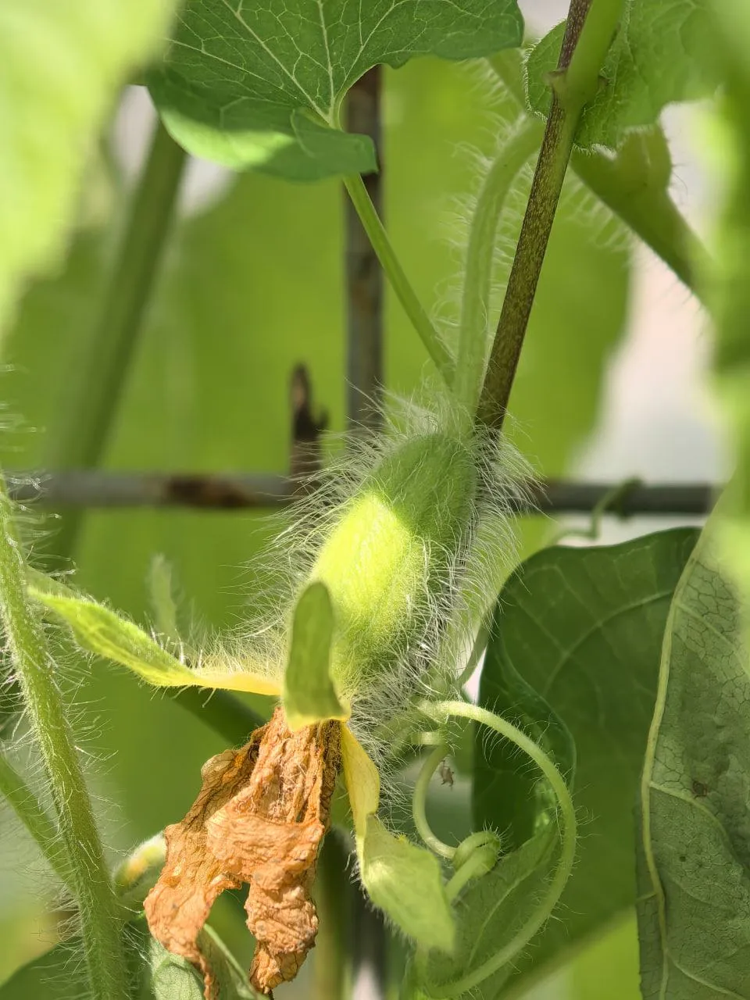
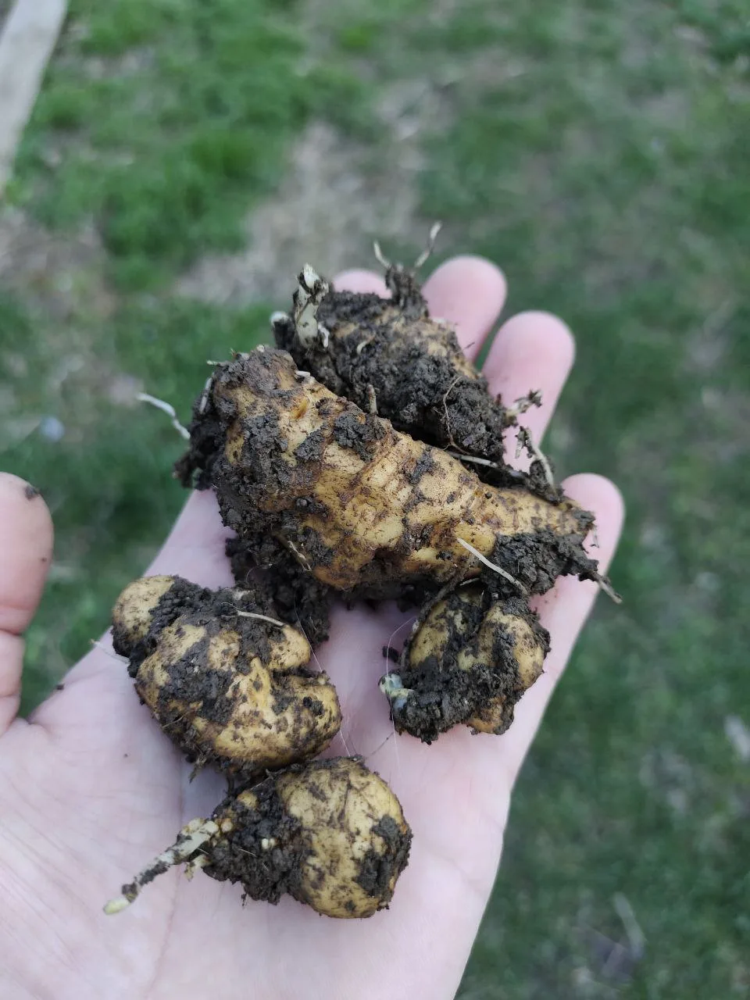
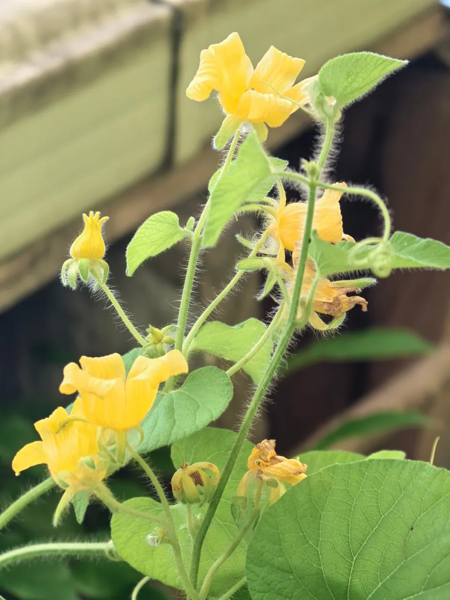
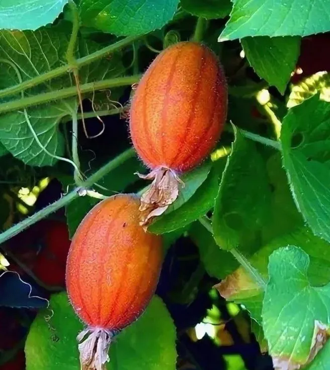
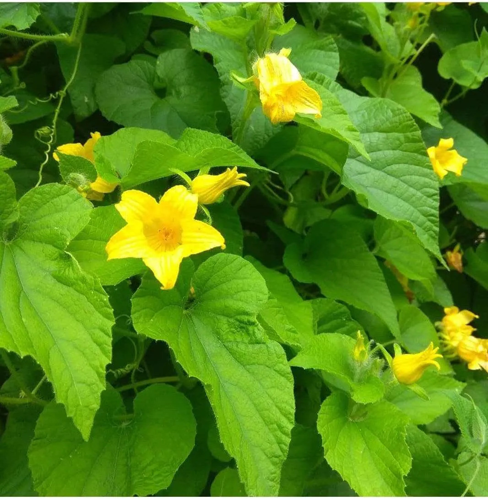

Многолетнее растение из семейства тыквенных с яркими красными плодами. Неприхотливая лиана, которая размножается клубнями и требует ручного опыления.
Преимущества культуры для вашего участка.
Каждый сорт уникален — от формы до вкуса.
Тладианта в разные сезоны: от всходов до сбора урожая.





Всё, что нужно знать о культуре: от посадки до хранения.
Тладианта — удивительно неприхотливое многолетнее растение, которое при правильном подходе радует урожаем ярких плодов.
Скорее всего, не происходит опыления. Естественный опылитель (пчела ктеноплектра) встречается не во всех регионах. Попробуйте ручное опыление с использованием пыльцы других тыквенных.
Тладианта легко размножается клубнями. Отделите небольшой клубень от цепочки и посадите в почву. Клубни очень живучи и сохраняют всхожесть даже после длительного хранения.
Да, тладианта — многолетник, клубни отлично зимуют в почве. Растение обладает высокой морозостойкостью и не требует укрытия на зиму.
Да, плоды съедобны. Их можно есть свежими, использовать для варенья или консервации. Вкус специфический, напоминает сладковатый огурец.
Посадочный материал из коллекции Batatchudo и рекомендации по выращиванию.